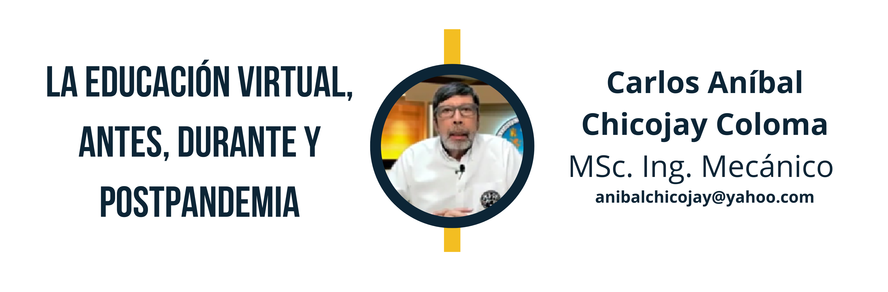

1 La educación virtual, antes, durante y postpandemia

1.1 Resumen
Se aborda el tema de la educación virtual, la cual antes de la pandemia se veía como una opción o complemento a las clases presenciales. Se hace una breve descripción de los 3 momentos: antes, durante y después de la pandemia. Se presenta una muestra de las aplicaciones que los profesores manejaban antes de la pandemia y con las cuales llevaron adelante la parte final del primer semestre 2020. A partir del segundo semestre, el campus virtual de la Facultad de Ingeniería se conformó por las plataformas Moodle y Google Meet, las cuales se convirtieron en obligatorias.
1.2 Abstract
The issue of virtual education is addressed, which before the pandemic was seen as an option or complement to face-to-face classes. A brief description of the 3 moments is made: before, during and after the pandemic. A sample of the applications that teachers used before the pandemic and with which they carried out the final part of the first semester of 2020 is presented. Starting in the second semester, the virtual campus of the Faculty of Engineering was made up of the Moodle and Google Meet, which became mandatory from that moment on.
1.4 Introducción
La educación virtual es un método de enseñanza que utiliza la tecnología para impartir conocimientos a través de medios digitales. Este modelo de aprendizaje ha ganado popularidad en los últimos años, especialmente durante la pandemia de COVID-19, que obligó a muchos estudiantes a aprender en línea. Siempre este tipo de educación contó con detractores, indiferentes y unos pocos confiaban ella, mientras se seguía con el método de educación tradicional.
Le llegó el momento a la educación virtual, ya que a pesar que algunos profesores no manejaban ninguna plataforma virtual, la pandemia obligó a todos a introducirse en este campo, de tal forma que quienes no contaban con ningún conocimiento, lo obtuvieron, y quienes tenían algún conocimiento lo mejoraron; de modo que, actualmente, todos los profesores manejan el mismo idioma en cuanto a este tipo de educación.
1.5 Artículo
Ventas y desventajas de la educación virtual
Si se hace una comparación de la educación virtual con el método tradicional, se puede decir que algunas cuestiones se pueden realizar de manera más fácil y más entendible utilizando la tecnología de información y comunicación; pero en algunas otras, definitivamente se debe de contar con la presencialidad. En el caso de los laboratorios para las carreras técnicas. A continuación, se presentan las ventajas y desventajas de la educación virtual.
Ventajas:
- Flexibilidad: los estudiantes pueden aprender a su propio ritmo y en su propio horario. La educación virtual les permite trabajar a tiempo completo, cuidar a sus familias y estudiar al mismo tiempo.
- Accesibilidad: los estudiantes pueden acceder a los cursos desde cualquier lugar del mundo, siempre y cuando tengan una conexión a Internet. Esto significa que pueden tomar cursos de instituciones en otros países, ampliando sus opciones educativas.
- Menor costo: en muchos casos, la educación virtual es más económica que la presencial, ya que no se requiere el mismo nivel de inversión en infraestructura y personal. Además, los estudiantes pueden ahorrar en costos de transporte y alojamiento.
- Personalización: la educación virtual puede adaptarse a las necesidades individuales de cada estudiante. Los estudiantes pueden avanzar a su propio ritmo y recibir una atención personalizada por parte de los instructores.
Desventajas:
- Falta de interacción personal: la educación virtual carece de la interacción personal y social que se da en el aula tradicional. Los estudiantes pueden sentirse aislados y desconectados del profesor y de sus compañeros.
- Dificultades tecnológicas: los problemas técnicos dificultan el acceso a los cursos en línea. La calidad de la conexión a Internet y la disponibilidad de dispositivos electrónicos pueden afectar la calidad del aprendizaje.
- Falta de estructura: la educación virtual requiere que los estudiantes sean responsables de su propio aprendizaje y se automotiven para cumplir con las tareas y plazos. Los estudiantes que necesitan una estructura más rígida pueden tener dificultades para adaptarse.
- Limitaciones de recursos: en algunos casos, la educación virtual suele limitar el acceso a recursos y materiales educativos. Los estudiantes pueden no tener acceso a laboratorios, bibliotecas y otros recursos que serían más fácilmente accesibles en un entorno presencial.
Los profesores también deben adaptar sus métodos de enseñanza a la educación virtual para asegurarse de que los estudiantes estén recibiendo una educación de alta calidad.
La educación virtual antes de la pandemia
Antes de la pandemia, la educación virtual era utilizada en menor medida, principalmente en universidades y cursos de formación profesional. Aunque existían algunas iniciativas y recursos en línea para la educación, la mayoría de los estudiantes asistía a clases presenciales. La educación virtual se consideraba una opción para aquellos que no podían asistir a las clases presenciales debido a limitaciones geográficas, laborales o de salud, pero no era la norma.
La educación virtual durante la pandemia
Durante la pandemia, la educación virtual se convirtió en la única opción para muchas instituciones educativas en todo el mundo. Las clases en línea se convirtieron en la norma para la mayoría de los estudiantes, desde la educación básica hasta la universidad. Los maestros y profesores se adaptaron rápidamente a las herramientas y plataformas en línea para impartir clases sincrónicas y asincrónicas, y se desarrollaron nuevos recursos educativos digitales para apoyar el aprendizaje en línea.
La educación virtual postpandemia
En el futuro, la educación virtual seguirá siendo una opción importante para muchos estudiantes y docentes. Las lecciones aprendidas durante la pandemia permitirán a las instituciones educativas mejorar y ampliar sus ofertas de educación virtual; muchos estudiantes y maestros descubrieron que esta puede ser una forma efectiva y conveniente de aprender y una opción más económica y accesible para estudiantes de todo el mundo.
La educación virtual puede incluir tanto clases sincrónicas como asincrónicas. Las clases sincrónicas son en tiempo real y permiten a los estudiantes interactuar con sus profesores y compañeros en línea. Las clases asincrónicas, por otro lado, son pregrabadas o en línea y permiten a los estudiantes aprender a su propio ritmo, sin tener que conectarse en un momento específico. Ambas opciones tienen ventajas y desventajas; la elección depende de las necesidades y preferencias de los estudiantes y los objetivos de aprendizaje.
Las clases sincrónicas y asincrónicas son dos modalidades de enseñanza que se han popularizado, especialmente debido a la pandemia de COVID-19; a continuación se presentan algunas ventajas y desventajas de cada modalidad.
Ventajas de las clases sincrónicas:
- Interacción en tiempo real: los estudiantes pueden interactuar con el profesor y sus compañeros en tiempo real, lo que permite una mayor inmersión en el tema y la posibilidad de hacer preguntas y recibir respuestas inmediatas.
- Dinámica de grupo: las clases sincrónicas pueden ser más dinámicas y fluidas, especialmente cuando se trata de discusiones y debates.
- Seguimiento del progreso: el profesor puede evaluar el progreso de los estudiantes durante la clase y proporcionar retroalimentación en tiempo real.
- Disciplina y rutina: las clases sincrónicas pueden ayudar a los estudiantes a mantener una rutina de estudio y a ser más disciplinados en su aprendizaje.
- Accesibilidad: las clases sincrónicas pueden ser accesibles para estudiantes que viven lejos de la escuela o que tienen dificultades para asistir a clases presenciales.
- Flexibilidad: las clases sincrónicas pueden programarse en diferentes horarios, para adaptarse a las necesidades de los estudiantes y del profesorado.
- Compartir recursos: los profesores pueden compartir recursos de enseñanza en tiempo real, como presentaciones, videos y materiales de lectura.
- Establecimiento de relaciones: las clases sincrónicas pueden permitir el establecimiento de relaciones más estrechas entre los estudiantes y el profesor.
- Fomento de la colaboración: las clases sincrónicas pueden fomentar la colaboración entre los estudiantes, especialmente cuando se trabaja en grupos.
- Preparación para el mundo laboral: las clases sincrónicas pueden ayudar a los estudiantes a desarrollar habilidades de comunicación y trabajo en equipo, que son importantes para el mundo laboral.
Desventajas de las clases sincrónicas:
- Problemas de conexión: las clases sincrónicas pueden ser interrumpidas por problemas de conexión a Internet o por otros problemas técnicos.
- Dificultades para concentrarse: los estudiantes pueden tener dificultades para concentrarse en las clases en línea debido a las distracciones del entorno en el que se encuentran.
- Problemas de acceso: los estudiantes pueden tener dificultades para acceder a las clases sincrónicas debido a la falta de dispositivos o a una conexión a Internet lenta o inestable.
- Falta de flexibilidad: las clases sincrónicas requieren que los estudiantes se conecten en un horario específico, lo que puede no ser conveniente para todos.
- Falta de interacción personal: las clases sincrónicas carecen de la interacción personal que se da en las clases presenciales, lo que puede afectar la calidad de la enseñanza y la experiencia de los estudiantes.
- Dificultades para adaptarse: algunos estudiantes pueden tener dificultades para adaptarse a las clases en línea, especialmente si están acostumbrados a la enseñanza presencial.
- Dificultades para evaluar: a los profesores se les dificulta evaluar a los estudiantes en línea, especialmente si se trata de asignaciones que requieren la realización de actividades prácticas.
- Problemas de comunicación: los estudiantes pueden presentar problemas de comunicación por el nulo contacto personal.
Ventajas de las clases asincrónicas:
- Flexibilidad de horarios: el estudiante puede acceder a la clase en cualquier momento, lo que permite adaptar el tiempo de estudio a sus necesidades.
- Mayor accesibilidad: la educación asincrónica permite a los estudiantes de cualquier parte del mundo acceder a cursos ofrecidos por instituciones de renombre.
- Reducción de costos: no hay gastos de desplazamiento ni necesidad de alojamiento, lo que hace que los costos sean menores.
- Mayor interacción: las plataformas de aprendizaje asincrónico ofrecen diversas herramientas que fomentan la interacción entre los estudiantes y el profesor, como chats, foros y videollamadas.
- Flexibilidad de ritmo de aprendizaje: el estudiante puede avanzar a su propio ritmo, dedicando más tiempo a los temas que le resultan más complicados.
- Personalización del aprendizaje: los estudiantes pueden elegir el material de aprendizaje que les resulte más interesante y relevante para sus necesidades.
- Mayor autonomía: los estudiantes deben asumir la responsabilidad de su aprendizaje, lo que fomenta la autonomía y autorregulación del aprendizaje.
- Oportunidades para trabajar mientras se estudia: la flexibilidad de horarios permite a los estudiantes trabajar mientras estudian.
- Menor estrés: no tener que cumplir con horarios estrictos y tener la flexibilidad de tomar el curso en su propio tiempo puede reducir el estrés en los estudiantes.
- Disminución del ausentismo: no estar obligado a asistir a clases en un horario específico puede reducir el ausentismo y el retraso en el avance del curso.
Desventajas de las clases asincrónicas:
- Falta de interacción en tiempo real: la ausencia de interacción en tiempo real con el profesor y otros estudiantes, puede dificultar el aprendizaje.
- Menor motivación: la falta de interacción y de estructura puede disminuir la motivación del estudiante.
- Falta de feedback inmediato: el estudiante tiene que esperar más tiempo para recibir comentarios y retroalimentación del profesor.
- Menor colaboración entre los estudiantes: la falta de interacción en tiempo real puede disminuir la colaboración entre los estudiantes.
- Dificultades para aclarar dudas: al no tener una interacción directa con el profesor, el estudiante puede tener dificultades para aclarar dudas y obtener respuestas inmediatas.
- Falta de seguimiento: puede darse dificultad para que el estudiante le dé seguimiento a su avance.
El avance tecnológico de las plataformas educativas durante la pandemia
Durante la pandemia del COVID-19 las aplicaciones de comunicación en línea como Zoom, Meet, Skype, Teams y otras, experimentaron un gran aumento en su uso debido a la necesidad de comunicación y trabajo a distancia. Esto permitió a las personas comunicarse de manera efectiva, colaborar en proyectos y mantener el contacto social mientras se mantenían seguras en sus hogares.
Uno de los mayores avances tecnológicos en estas aplicaciones ha sido la mejora en la calidad del video y el audio. Con la capacidad de transmitir video de alta definición y audio de alta calidad, las reuniones virtuales se han vuelto cada vez más inmersivas y han permitido una mejor comunicación. Además, muchas de estas aplicaciones han agregado funciones de colaboración en tiempo real, como compartir pantalla, pizarra digital, chat y la posibilidad de trabajar en documentos en línea en tiempo real, lo que ha permitido a los equipos trabajar de manera más efectiva en proyectos. Otro avance importante ha sido la seguridad y la privacidad. Muchas de estas aplicaciones han mejorado su encriptación y agregado medidas de seguridad adicionales para proteger la privacidad de los usuarios.
En general, estas aplicaciones han permitido una mayor flexibilidad en la forma en que las personas trabajan y se comunican, y han demostrado ser una herramienta valiosa durante la pandemia. Es probable que sigan siendo una parte importante por la forma en que las personas trabajan y se comunican en el futuro, incluso después de que la pandemia haya pasado.
Dificultades de adaptación del profesor durante la pandemia en las plataformas educativas
Durante la pandemia, los profesores enfrentaron varios desafíos para adaptarse a las plataformas educativas y al nuevo método. Algunas de las dificultades más comunes que han enfrentado incluyen:
- No contar equipo, conexión a internet y espacio adecuados en la residencia para realizar su labor cien por ciento en línea.
- Falta de experiencia en tecnología: muchos profesores no estaban familiarizados con el uso de las plataformas educativas en línea, lo que dificultó la transición a un entorno de este tipo de enseñanza.
- Problemas de conectividad y acceso a internet: no todos los profesores tienen acceso a una conexión de internet estable, lo que puede dificultar su capacidad para comunicarse con los estudiantes y utilizar las plataformas educativas en línea.
- Adaptación al formato en línea: la enseñanza en línea requiere habilidades y enfoques diferentes a los de la forma presencial. Los profesores deben adaptar su estilo de enseñanza para garantizar que los estudiantes reciban una educación efectiva.
- Falta de interacción cara a cara: la enseñanza en línea limita la interacción cara a cara entre profesores y estudiantes, lo que puede dificultar el proceso de aprendizaje y la retroalimentación en tiempo real.
- Gestión del tiempo: la enseñanza en línea puede requerir una planificación y organización cuidadosas para asegurarse de que se cumplan los plazos y se mantenga la productividad.
Para superar estas dificultades fue importante que los profesores recibieran capacitación y apoyo para utilizar las plataformas educativas en línea de manera efectiva. Además, la comunicación regular con los estudiantes y la retroalimentación en tiempo real han sido esenciales para garantizar un aprendizaje efectivo.
En la gráfica siguiente se dan a conocer las aplicaciones que los docentes de la Facultad de Ingeniería de la USAC estaban en disposición de utilizar al momento de suspender clases el 14 de marzo de 2020.
Durante el primer semestre del año 2020, a partir del 14 de marzo, se continuaron las clases con educación virtual utilizando las aplicaciones o plataformas que se describen en el cuadro No. 1. Durante el segundo semestre de ese mismo año, la administración de la Facultad de Ingeniería impartió capacitaciones docentes intensivas respecto de las plataformas Moodle y Google Meet, las cuales se convirtieron en las plataformas oficiales del campus virtual de la Facultad.
Figura 1.1: Tabla 1. Aplicaciones o plataformas que manejaban los profesores de la Faculta de Ingeniería de la USAC antes de la pandemia. (Escuela de Ingeniería Mecánica).
Dificultades de adaptación del estudiante durante la pandemia en las plataformas educativas
La pandemia ha obligado a la mayoría de los estudiantes a trasladar su aprendizaje a plataformas en línea, lo que ha planteado desafíos significativos para la adaptación de los estudiantes. Algunas de las dificultades más comunes incluyen:
- Falta de acceso a la tecnología: muchos estudiantes no tienen acceso a una computadora o conexión a Internet confiable, lo que dificulta su participación en las plataformas educativas en línea.
- Falta de interacción social: los estudiantes a menudo se sienten aislados al no interactuar directamente con sus compañeros y profesores. La falta de contacto social puede llevar a la falta de motivación y compromiso con el aprendizaje.
- Falta de estructura: en un ambiente en línea es fácil perderse en el tiempo y no mantener una estructura clara en el aprendizaje. Los estudiantes pueden tener dificultades para mantenerse enfocados y organizados.
- Falta de retroalimentación: en un ambiente en línea, la retroalimentación puede ser limitada y no tan inmediata como en un ambiente de aprendizaje presencial, lo que puede dificultar la comprensión y corrección de errores.
- Sobrecarga de trabajo: los estudiantes pueden tener dificultades para equilibrar la carga de trabajo en línea con otras responsabilidades y obligaciones, como cuidar de la familia o trabajar.
Para ayudar a los estudiantes a superar estas dificultades es importante que los profesores y administradores de la plataforma educativa brinden apoyo y recursos adecuados. Esto puede incluir tutorías virtuales, herramientas de colaboración en línea, retroalimentación clara y oportuna, y la flexibilidad en los plazos y asignaciones.
1.6 Conclusiones
- La educación virtual se convirtió en una herramienta indispensable durante la pandemia.
- La adaptación, tanto de los profesores como de los estudiantes a este tipo de educación, llevó algunas dificultades, que con el paso del tiempo se han ido subsanando.
- Las plataformas virtuales a raíz de la pandemia tuvieron un auge, de tal forma que las mismas mejoraron notoriamente.
- A partir del segundo semestre del 2020, la Facultad de Ingeniería de la USAC utiliza como obligatorias las plataformas Moodle y Google Meet, necesarias para este tipo de educación.
1.7 Discusión de resultados
Si bien es cierto, los profesores prácticamente no tenían conocimiento respecto de plataformas educativas antes de la pandemia, las circunstancias obligaron a finalizar el primer semestre del año 2020 con los pocos conocimientos que tenían. Además, otra dificultad fue el no contar equipo, conexión a internet y espacio adecuados en la residencia.
El gran aprendizaje que dejó la pandemia, fue el manejo de las plataformas educativas, lo cual hará que el retorno a la presencialidad no sea exactamente igual a lo a costumbrado antes de la pandemia.
1.8 Referencias
[1] Atarama, T. (2020). La educción virtual en tiempos de pandemia. Universidad de Piura. Recuperado de https://acortar.link/0fqrQC. Último acceso: 25 marzo de 2023.
[2] Edtick (2023). El estado de la educación en línea antes y después de la pandemia. Recuperado de https://acortar.link/lLGjOQ. Último acceso: 12 de marzo de 2023.
[3] Geducar (2023). Ventajas y desventajas de la educación virtual. Recuperado de https://acortar.link/zLukEn. Último acceso: 20 de marzo de 2023.
[4] IBO (2021). 10 plataformas más utilizadas en tiempos del COVID-19. Recuperado de https://acortar.link/QQHrtp. Último acceso: 25 de marzo de 2023.
[5] Ministerio de Educación de Colombia (2023). Educación virtual o educación en línea. Recuperado de https://acortar.link/QpNZSN. Último acceso: 20 de marzo de 2023.